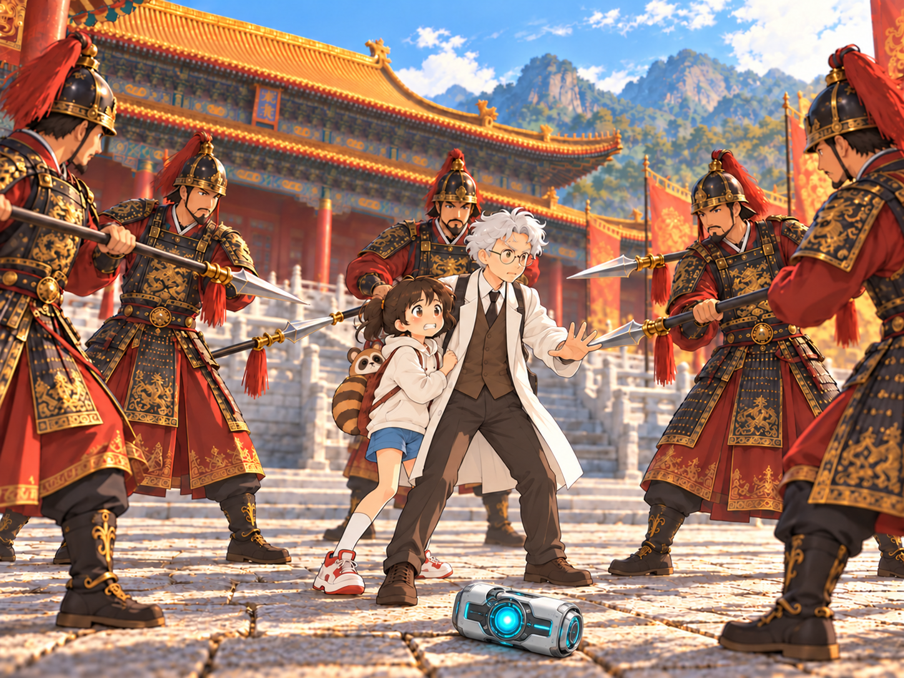
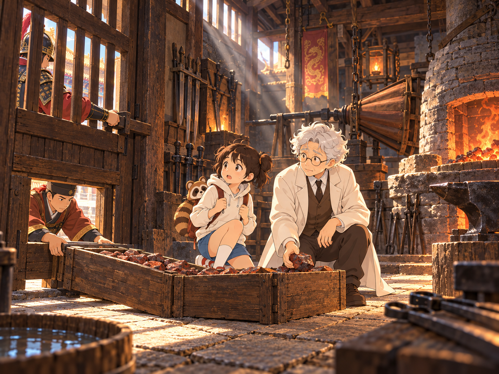
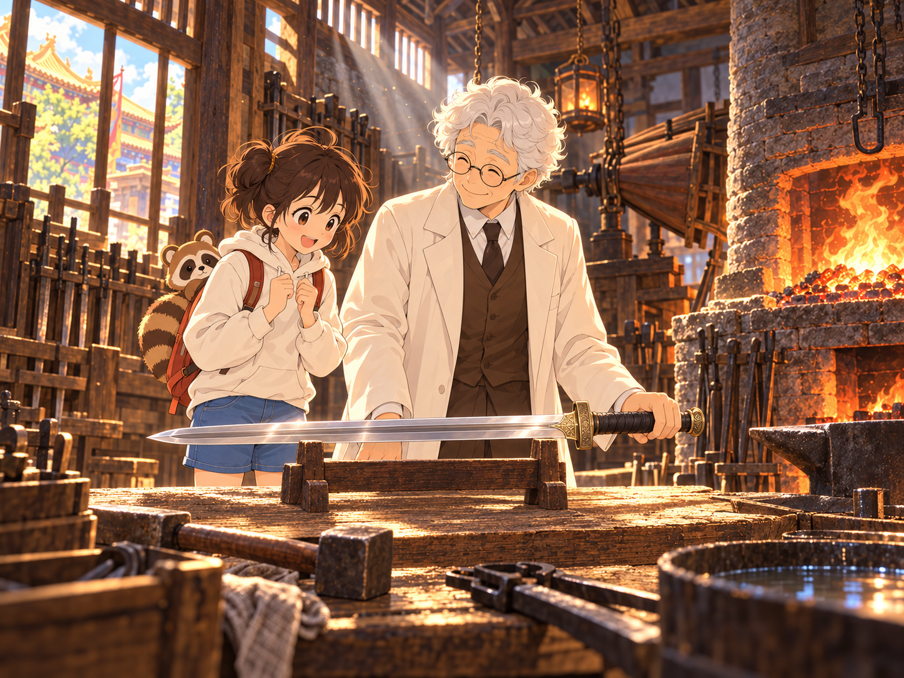

小葵 × 阿公｜一場尋找回家之路的科學冒險
一場實驗意外，把小葵與阿公送到了中國古代。
想回家，得先替皇帝打造一把神兵。
和小葵一起提問，陪阿公找證據。從一塊礦石，走向回家的路。

實驗中，阿公的時空裝置意外啟動。光芒散去，兩人竟站在中國古代的宮城前！時空裝置掉在石地上，阿公連忙護住小葵。五名禁軍持矛圍上來，拾起裝置，將兩人帶去見皇帝。
皇上「你們從哪裡來？身上穿的，又是什麼奇裝異服？」
阿公「啟稟皇上，我們來自遙遠的國度。那個裝置能帶我們回家，可否請皇上歸還？」
皇上「哦？那東西堅硬得很，朕的工匠怎麼也打不開。若你們能打造一柄無堅不摧、削鐵如泥的神兵，朕就把它還給你們！」
小葵小聲問：「我們真的做得到嗎？」阿公打開隨身攜帶的實驗箱：「我們可以的，一步一步來。」


有了刀劍的形狀，還得試試刀材。哪一把，才能撐得住？